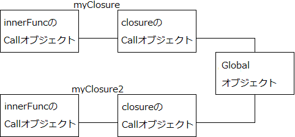

| 何となくJavaScriptを書いていた人が一歩先に進むための本 | |
| 五十嵐肇 & 多良間斎 | |
| (2016) | |
JavaScriptって、不思議な言語ですよね。
多少の知識があれば、誰でもある程度はプログラミング出来ます。
しかし、突き詰めようすると、とたんに理解し辛い難解な代物となります。
筆者も、十余年のエンジニア生活の中で、若い頃はわりといい加減にJavaScriptに接して来ました。
それでも、サーバサイドの開発がメインだった時代では、大して問題はありませんでした。
しかし時代は変わり、フロントエンドの開発が重視されるようになった昨今、JavaScriptの重要性は、年々確実に増しています。
・・・それなのに。
何で、どこの現場もフロントエンド周りの教育に力を注がないんですかね！？
HTMLやCSSもそうですけど、コーディングさせるなら、まずはちゃんとJavaScriptの教育をしないとダメじゃないですか！
DBやフレームワークもそりゃ大事ですけど、ユーザーにリアルに接するのはフロントエンドじゃないですか！
フロントエンドには専門職がいる？
甘い！
そんなこと言ってられるの、一部のお金持ち企業だけですから！！
こんなことだから、海外からは日本製のWebサイトはレベルがひ（ｒｙ
と言うわけ(？)なので、いっちょ本を書き起こしてみました。
今まで何とな〜くJavaScriptを書いていた人たちに、是非その先の世界へ進んでもらいたいのです。
JavaScriptは、ある程度の理解が進むと、とたんに楽しくなって来ます。
是非、その喜びを味わってみてください。
この本をお買い上げいただいたのも、きっと何かの縁。 一緒にJavaScriptの奥深い世界に足を踏み入れてみましょう。
2016年5月吉日 Kinky-Do 五十嵐肇
本書は主に以下のような方を対象としています。
・今まで何となくノリと勢いでJavaScriptを書いて来た人
・文法と演算子、制御文ぐらいは抑えているけど・・・と言う人
・もっと深くJavaScriptのことを知りたい人
・JavaやC#など、他のオブジェクト指向言語のある程度の知識、経験がある人
逆に、上記のいずれにも該当しない人には、全くオススメいたしません。
本書では、JavaScriptの基本中の基本の部分については、本当におさらい程度にしか触れません。
また、ブラウザオブジェクトについては一切触れません。
最後に、JavaScriptの全てを本書で学べる訳ではありません。（当たり前ですが！）
予めご了承ください。
本書で扱っているサンプルソースは、主に以下の環境で動作確認を行っております。
・MaxOS X 10.11.1
・Windows 10 Home バージョン：1511
・Chrome最新版
上記以外の環境では、一部正常に動作しない場合や、サンプルとは違った結果が得られる場合がありますので、ご注意ください。
また、サンプルソースの出力結果は全てコメントアウトで表していますので、そちらもご注意ください。
一言で「基礎」と言っても、明確な定義はありません。
そこで、本書では「基礎」の定義を以下のようにしています。
・記述ルール（文法）
・データ型
・演算子
・制御文
まずは、これらについておさらいをします。
言葉通り「おさらい」なので、モノによってはあまり深いところまでは触れません。
基礎のキの字までの詳細がガッツリ必要な方は、既に世に出回っている星の数ほどの書籍の中から、目的に沿った好きな一冊をお選びください。
また、「基礎なんて完璧だぜ」と言う方は、Chapter2は読み飛ばして頂いても結構でございます。
JavaScriptの文法は、さほど難しいものではありません。
いくつかのルールに則ってしまえば、割りとアッサリ動きます。
また、更にいくつかのルールは省略可能だったりもします。
これらについては、言葉でツラツラ説明するよりも、まずは例を見てサッとおさらいしてしまいましょう。
例：２−２−①
var hoge = ''; ①
fuga = 123
//これはコメント ②
/* ③
これも
コメント
*/
fuga = '今日は' + ④
'いい天気' + 'ですね'
;
① 変数は var で宣言します。付けなくても宣言出来ますが、特別な理由が無い限り必ず付けるようにしましょう。
また、文末にはセミコロン（;）を付けます。これまた省略可能ですが、こちらは必ず付けるようにしましょう。
② 単行のコメントアウトは // です。
③ 複数行のコメントアウトは /* 〜〜 */ です。
④ 最低限のルールに則っていれば、改行はやりたい放題です。
とりあえず、リテラルの途中で改行するなんて言うトンデモ行動に出なければ問題無いです。
JavaScriptの記述ルールは、大きく分けると以下の通りとなります。
・大文字小文字は区別する
・センテンス内の空白と改行は無視される
・センテンスの区切りにはセミコロンを付ける
まず、大文字と小文字の区別については説明不要だと思います。
例：２−２−②
hoge = 'fuga';
Hoge = 'foo';
console.log(hoge);// fuga
console.log(Hoge);// foo
仮に納得行かない人がいたとしても、こう言うモンだと思って諦めてください。
次に、センテンス内の空白と改行についてです。
こちらは、他の言語に慣れた人のうち、一部の人にとっては違和感を覚えるかもしれません。
とは言え、難しいことは一切無いと思います。
例：２−２−③
var hoge = 'fuga';// OK
var num = 10;// OK
var val =
'foo';// OK
var ho ge = '';// NG
var boo = 'abc// NG
def';
とりあえず、
・文の中で空白やタブなどの空白文字と改行は自由に挿入可能
・単語やリテラルの中に空白や改行を入れることは不可能
と覚えておきましょう。
最後に文末のセミコロンについてです。
JavaScriptでは、文末にセミコロンが付いていなくてもある程度勝手に文脈を判断して、文末にセミコロンが付いているものとして扱ってくれます。
まぁ、考え様によっては便利っちゃ便利なんですけど、細かいことは抜きにして、絶対に文末にはセミコロンを付けるように徹底しましょう。
セミコロンを省略するデメリットは多々あっても、メリットはほぼ皆無です。
ファイルサイズを1バイトでも減らしたいとか、そんな切ない事情でも無い限り、必ず付けるようにしましょう！
JavaScriptでの変数宣言は、基本的にvar命令で行います。
前述の通り、var命令は省略可能ですが、これを付けておかないと思わぬ動作に苦しめられる可能性があります。
以下に例を記します。
例：２−２−④
// グローバル変数を宣言する
val = 'Global！';
function getValue(){
// ローカル変数を宣言する？
val = 'Local！';
return val;
}
console.log(getValue());// Local！
console.log(val);// Local！
例：２−２−⑤
// グローバル変数を宣言する
var val = 'Global！';
function getValue(){
// ローカル変数を宣言する
var val = 'Local！';
return val;
}
console.log(getValue());// Local！
console.log(val);// Global！
ソースを見れば、差は一目瞭然ですね！
JavaScriptでは「var命令を使わずに宣言した変数はすべてグローバル変数とみなす」と言うルールがあります。
逆に言えば、ローカル変数を宣言するには、var命令は絶対に欠かせないと言うことでもあります。
前述の例：２−２−④では、getValue()関数の中でローカル変数としてval変数を宣言したつもりのところ、var命令が付いていないがために、
既に宣言されているグローバル変数(val)に対しての代入として解釈されてしまったわけです。
この仕様は、規模が大きくなればなるほど、開発を進めて行く中で大問題に発展する恐れがあります。
jsファイルに切り出したソースをいくつもインポートするようなケースを考えてみると、その危険性は説明するまでもないと思います。
ですので、もうこの際、どのような開発ケースでも必ず以下のように徹底しましょう。
「変数宣言は必ずvar命令を使うこと！！！」
コーディング規約レベルでこのように定めておけば、複数人で開発をするようなケースでも無用なトラブルを一つ避けることができます。
また、あなた個人で開発を行うケースでも、ウッカリミスを一つ減らせることでしょう。
ちなみに。
ES6（ECMAScript6）では、var命令の他にlet命令とconst命令言うものが存在します。
これらも考慮し出すと、一気に話がヤヤコシクなる上に、現状ではES6の普及も完璧とは決して言えません。
ですので、一旦ここでは触れないことにします。
※ES6については、本書後半で軽く触れますので、そちらを参考にしてください
JavaScriptの変数名、関数名のルールは以下の通りです。
・半角のアルファベット、半角の数値、半角のアンダースコア、半角のドル記号で構成されること
・数値で始まらないこと
・予約語で無いこと
何ら難しいことはないですね。
他の言語と比べても、ほとんど違和感は無いと思います。
なお、予約語の種類についての詳細は、本書では割愛します。
調べたい人は「JavaScript 予約語」でググれば山のように情報が出てきますので、それらを参照してください。
まず最初に確認しておきます。
JavaScriptは、「データ型を意識しなくていい言語」なのではなく、「データ型について非常に寛容な言語」です。
もっと言うと、データ型について正しく理解していないと、使いこなすなんて絶対不可能な言語です。
ここら辺、結構勘違いしている人が居ますので、仮にあなたもそうであれば、今すぐ考えを改めてから以下を読み進めてください。
JavaScriptのデータ型は、大きく基本型（プリミティブ型）と参照型に分類されます。
基本型には以下の種類があります。
・真偽値（true／false）を扱うためのboolean
・数値を扱うためのnumber
・文字列を扱うためのstring
・null値を扱うためのnull
・未定義値を扱うためのundefined
また、参照型には主に以下の種類があります。
・配列を扱うためのarray
・オブジェクトを扱うためのobject
・関数を扱うためのfunction
基本型と参照型の違いは、簡単に言ってしまえば
「値そのものを扱うのか、値の格納されているアドレスを扱うのか」
です。
この概念は、他の言語の考え方と何ら違いはありません。
しかし、関数を扱うためのfunctionに関しては、他の言語経験者の多くを悩ませる一因だと思います。
関数については、別項で詳細に触れますので、ここでは詳細は割愛します。
とりあえず、JavaScriptでは関数もデータ型の一種であると言うことに、無理やりでもいいので慣れておいてください。
なお、データ型に格納出来る値そのもの、または値の表現方法のことをリテラルと言います。
リテラルを正しく理解することは、JavaScriptを理解する上で欠かせない要素の一つです。
JavaScriptの数値リテラルは、整数リテラルと浮動小数点リテラルに分類されます。
また、整数リテラルには10進数、8進数、16進数のそれぞれのリテラルがあります。
| 例 | 補足 | ||
| 整数リテラル | 10進数リテラル | 100、1、0など | 日常的に表現する値 |
| 8進数リテラル | 0600、0655、0777など | 頭に0を付ける | |
| 16進数リテラル | 0xFFff11、0xCC55BBなど | 頭に0xを付ける | |
| 不動小数点リテラル | 1.1、3.14e5など | 指数表現も可能 | |
文字列リテラルは、シングルクォート（'）またはダブルクォート（"）で値を囲みます。
JavaScriptでは、他の多くの言語と異なり、シングルとダブルのどちらのクォーテーションでも文字列を表現出来ます。
前後の対応関係が取れている限り、特にどちらでないとダメ、と言うことはありません。
また、文字列の中にシングル／ダブルクォートを含める場合は、文字列中に使用するクォートとは逆のクォートで囲むか、文字列中のクォートを¥でエスケープする必要があります。
例：２−３−①
'こんにちは！'
"こんばんわ！"
"He's Hero!"
'He¥'s Hero!'
ちなみに、筆者的には基本的にシングルクォートの利用をオススメいたします。
※HTMLを含む文字列を生成する際に便利なため
配列リテラルは、カンマで区切った値をブラケット（[]）で囲った形式で表します。
それぞれの要素にはインデックス番号をキーにアクセスします。
インデックス番号は、0、1、2・・・と0から始まります。
例：２−３−②
var arr =
['java', 'JavaScript', 'HTML'];
console.log(arr[1]);// JavaScript
また、多次元配列を定義したい場合は、単純に配列要素を入れ子にして定義すればOKです。
例：２−３−③
var arr =
['java', 'JavaScript',
['HTML', 'CSS'] ];
console.log(arr[2][0]);// HTML
オブジェクトとは、名前をキーにしてアクセスすることが可能な配列のような存在です。
ハッシュ、連想配列と呼ばれることもあります。
通常の配列に比べて、任意の名前でプロパティ(配列で言うところの要素)にアクセス出来るため、データの視認性や可読性が高くなります。
※オブジェクトについての詳しいことは、後のチャプターでガッツリ触れます
オブジェクトリテラルは、中括弧（{}）とコロン｛:｝を使って表記します。
また、各プロパテイへのアクセスは、ドット演算子を用いる方法と、ブラケット構文を用いる方法の2種類があります。
例：２−３−④
var obj = { a:1, b:2, c:3};
console.log(obj.a);// 1
console.log(obj['b']);// 2
ブラケット構文は、記述が冗長になるデメリットがありますが、ドット演算子では利用できない名称のプロパティを扱えます。
また、プロパティ名を変数にすることも可能です。
例：２−３−⑤
var obj = {};
obj['123'] = '123';
obj['999'] = '999';
var val = '999';
console.log(obj['123']);// 123
console.log(obj[val]);// 999
ドット演算子では、数字から始まるプロパティ名を扱えません。
また、変数を用いた動的なプロパティアクセスも出来ません。
とは言え、通常は、可読性の高いドット演算子を使うようにしていて問題無いでしょう。
前述した通り、JavaScriptでは関数もデータ型の一種となります。
よって、関数リテラルと言う概念も存在します。
関数リテラルは他のリテラルと違って複雑な要素が多いため、おさらいレベルで触れるのではなく、別項で詳細に扱います。
JavaScriptの演算子は、以下の種類に分類されます。
・算術演算子
・代入演算子
・比較演算子
・論理演算子
・ビット演算子
・その他
本書では、一般的な開発シーンでの利用が特に多い算術、代入、比較のそれぞれの演算子と、論理演算子の一部について取り扱います。
算術演算子は、標準的な四則演算をはじめ、数学的な演算を行います。
| 演算子 | 説明 | 例 | |
| + | 数値の加算 | 1 + 1 | // 2 |
| - | 数値の減算 | 8 - 5 | // 3 |
| * | 数値の乗算 | 2 * 4 | // 8 |
| / | 数値の除算 | 10 / 2 | // 5 |
| % | 数値の剰余 | 10 % 4 | // 2 |
| ++ | 前置加算 | x = 3; a = ++x; | // aは4 |
| ++ | 後置加算 | x = 3; a = x++; | // aは3 |
| -- | 前置減算 | x = 3; a = --x; | // aは2 |
| -- | 後置減算 | x = 3; a = x--; | // aは3 |
算術演算子は、見た目にもわかりやすく、直感的に利用できるものがほとんどです。
しかし、一部の演算子は、利用シーンによって若干の注意が必要になります。
まず、加算演算子（+）です。
加算演算子の挙動は、オペランド（演算対象の変数やリテラル）のデータ型によって異なります。
・オペランドが双方とも数値の場合は加算
・オペランドが片一方でも文字列の場合は文字列連結
具体的には例で理解してください。
例：２−４−①
console.log(10 + 100);// 110
console.log('10' + 100);// 10100
console.log(10 + '9');// 109
次に、前置後置加算と前置後置減算ですが、これらについては特にJavaScriptがゆえの注意点はありません。
前述した表の例をよく見て、その挙動を理解しておいてください。
最後に、小数点を含む演算について説明します。
JavaScriptは、数値の演算を内部的には２進数で行っているため、ごく当たり前の計算に誤差が生じます。
例：２−４−②
console.log(0.2 * 3);
// 0.6000000000000001
この挙動の対策としては、値を一旦整数にしてから演算を行い、演算結果を小数点に戻すようにすると正しい結果が得られます。
例：２−４−③
console.log(((0.2 10) 3) / 10);
// 0.6
代入演算子は、変数に値をセット（代入）するために使用します。
JavaScriptで利用可能な、主な代入演算子は以下の通りです。
| 演算子 | 概要 | 例 |
| = | 値を代入する | x = 10; |
| += | 左辺と右辺の値を加算した値を代入する | x = 10; x += 5; // xは15 |
| -= | 左辺と右辺の値を減算した値を代入する | x = 10; x -= 5; // xは5 |
| *= | 左辺と右辺の値を乗算した値を代入する | x = 10; x *= 2; // xは20 |
| /= | 左辺と右辺の値を除算した値を代入する | x = 10; x /= 2; // xは5 |
| %= | 左辺と右辺の値を除算した余りを代入する | x = 10; x %= 3; // xは1 |
| &= | 左辺の値を右辺の値で論理積演算した結果を代入する | x = 10; x &= 5; // xは0 |
| |= | 左辺の値を右辺の値で論理和演算した結果を代入する | x = 10; x |= 5; // xは15 |
| ^= | 左辺の値を右辺の値で排他的論理和演算した結果を代入する | x = 10; x ^=5; // xは15 |
| <<= | 左辺の値を右辺の値分左シフトした結果を代入する | x = 10; x <<=2; // xは40 |
| >>= | 左辺の値を右辺の値分右シフトした結果を代入する | x = 10; x >>=2; // xは2 |
論理演算系とシフト演算系の演算子に関しては、本書では詳細には触れません。
また、それら以外の演算子についても、別段説明不要でしょう。
JavaScriptがゆえの注意点と言うものは、特にありません。
比較演算子は、その名の通り左辺と右辺の値を比較し、結果をtrue／falseで返却します。
JavaScriptで利用可能な、主な比較演算子は以下の通りです。
| 演算子 | 概要 | 例 |
| == | 左辺と右辺の値が等しい場合にtrueを返す | 1 == 1 // true |
| != | 左辺と右辺の値が等しくない場合にtrueを返す | 1 != 1 // false |
| < | 左辺が右辺より小さい場合にtrueを返す | 1 < 2 // true |
| <= | 左辺が右辺以下の場合にtrueを返す | 5 <= 5 // true |
| > | 左辺が右辺より大きい場合にtrueを返す | 1 > 2 // false |
| >= | 左辺が右辺以上の場合にtrueを返す | 2 >= 3 // false |
| === | 左辺と右辺の値が同じ、かつデータ型も同じ場合にtrueを返す | 7 === 7 // true |
| !== | 左辺と右辺の値、データ型のいずれかが異なる場合にtrueを返す | 7 !== 7 // false |
| ?: | 条件演算子（三項演算子） | var i=1; (i==1) ? 'A' : 'B' // A |
比較演算子も、わりと直感的に使えるものがほとんどだと思います。
条件演算子（三項演算子）も他の言語と概念は全く同じです。
しかし、等価比較（==）と同値比較（===）の違いだけは、完璧に理解しておきましょう。
まず等価比較（==）ですが、これの仕様を言葉で表すのであれば
「例えオペランドの型が異なっていても、何とか等価として見なすことは可能か試みる」
こんな感じになります。
まぁ、言葉で表すとやっぱアレなので、例を見てもらうのが一番でしょう。
例：２−４−④
console.log(1 == true);// true
console.log(1 == '1');// true
var arr1 = ['JavaScript', 'HTML', 'css'];
var arr2 = ['JavaScript', 'HTML', 'css'];
console.log(arr1 == arr2);// false
ソースにしちゃえば、何てこと無いですね。
1、'1'、trueは全て型変換すれば等価として見なせるので、等価比較の結果はtrueとなります。
しかし、配列の場合だと変数の実態は参照先のアドレスとなるため、データ上はどうやっても等価としては見なせません。
よって、等価比較の結果はfalseとなる訳です。
次に同値比較（===）です。
こちらは等価比較（==）とは異なり、「何とか等価として見なせるか」なんて言うことは一切しません。
単純に値もデータ型も同じ場合のみ、trueとして扱います。
例：２−４−⑤
console.log(1 === true);// false
console.log(1 === '1');// false
JavaScriptはデータ型に寛容過ぎるがゆえに、時としてこの寛容さが思いもよらないバグの温床になり得ます。
なので、あえて等価としての判断を行いたい場合以外は、基本的には同値比較を使うクセを付けておくことをオススメします。
論理演算子とは、複数の条件式や論理値を論理的に結合し、その結果をtrue／falseで返却します。
前述した比較演算子と組み合わせると、より複雑な比較を行うことが出来ます。
JavaScriptで利用可能な論理演算子は以下の通りです。
| 演算子 | 概要 | 例 |
| && | 左右の式が共にtrueの場合にtrueを返す | 10 === '10' && 'AAA' == 'AAA' // false |
| || | 左右の式のどちらかがtrueの場合にtrueを返す | 10 === '10' || 'AAA' == 'AAA' // true |
| ! | 式がfalseの場合はtrueを返す | !(10 === '10') // true |
「&&」や「||」は、他の言語だとANDとかORって表現する場合もありますが、意味の違いはありません。
ただ、「&&」と「||」は「左辺だけが評価され、右辺が評価されない」ケースがあると言うことを忘れないようにしてください。
例えば「&&」の場合、左辺がfalseと評価されたら右辺は評価されません。
「||」は、左辺がtrueと評価されたら右辺は評価されません。
この概念は「サーキット評価」とか「サーキット演算」とか「短絡演算」とか呼ばれています。
使いこなすと、よりスマートな記述が出来るようになる場合があるので、もっと具体的に知りたい人はググッてください(笑)
さて、本書のおさらいシリーズもこれで最後となります。
サクっと知識の見直しをしてしまいましょう。
どれを取っても特別難しいことは無いはずです。
どんなプログラムを書くにせよ、必ずと言っていいほど登場する制御命令ですね。
if命令の構文は以下の通りです。
if (条件式１) {
条件式１がtrueの場合に実行する処理
} [else if (条件式２) {
条件式２がtrueの場合に実行する処理
} [else {
全ての条件式がfalseの場合に実行する処理
}]]
はい、何も難しいことはございません。
いくつか注意点やポイントを挙げるとすれば、
・中括弧（｛｝）は、処理が単行の場合に限り省略可能だけど、絶対に省略しないように
・条件パターン（elseやelseif）を複数書いた場合、実行されるのは最初に合致した部分のみ
・何個も何個もelseifを書くぐらいならば、switch命令を使うことも検討すべき！
これぐらいでしょう。
いくつもの条件で分岐させたい場合、if命令よりもswitch命令の方が適しています。
switch命令の構文は以下の通りです。
switch (式) {
case 値１:
「式＝値１」の場合に実行される処理
[case 値ｎ:
「式＝値ｎ」の場合に実行される処理
[default :
全ての値が式に合致しない場合に実行される処理]]
}
条件分岐は、書こうと思えばif〜elseif〜elseで全て書けるのですが、条件が多い場合は断然こちらを利用すべきです。
なお、switch命令を使う際の注意点としては
「caseブロックの終わりにbreak文を書かないと、それ以降の処理が続けて実行されてしまう」
これぐらいだと思います。
あえてこの挙動を逆手に取った記述をする場合以外は、break命令は必ず書くようにしましょう。
条件に応じて処理を分岐させたい場合、JavaScriptではwhile／do...while命令を使います。
それぞれの構文は以下の通りです。
while(条件式) {
条件式がtrueである間、繰り返す処理
}
do {
条件式がtrueである間、繰り返す処理
}while(条件式); ※ 文末のセミコロンに注意
両者の違いは、while命令はループの最初で条件式を判定するのに対して、do...whileはループの最後に処理を判定する点です。
要するに、do...whileの場合、条件式がどんな結果であれ必ず1回は処理が実行されるのに対し、whileは条件にマッチしなければ一度も処理が実行されません。
用途に応じて使い分けてください。
なお、while／do...while命令を使う場合、条件判定にミスると無限ループに陥る場合があります。
使用には十分に注意してください。
あらかじめ決まった回数の繰り返し処理を行う場合は、for命令の出番です。
構文は以下の通りです。
for (初期化式; ループ継続条件; 増減式) {
繰り返す処理
}
JavaScriptのfor命令は、カンマ演算子と合わせて利用することにより、複雑な記述を書くことが出来ます。
ちなみに、カンマ演算子は左右の式を続けて実行するための演算子です。
例：２−５−①
for (var i = 1, j = 1; i < 3; i++, j++) {
console.log('i + j = ' + (i + j) );
}
↓↓
i + j = 2
i + j = 4
for命令も、while／do...while命令と同様に、ループ継続条件式を誤って記述すると無限ループに陥る可能性がありますので、十分に注意してください。
for...in命令は、指定された配列や連想配列、オブジェクト配下の要素やメンバに対して順に処理を行います。
構文は以下の通りです。
for (仮変数in 配列とかオブジェクト) {
繰り返す処理
}
仮変数には、配列やオブジェクトなどから取り出された要素のインデックス番号やキー名、メンバ名が格納されます。
仮変数に格納された値はfor...inブロック内で参照可能です。
と、言葉で説明してもイマイチだと思うので、以下の例で挙動を確認してみてください。
例：２−５−②
var member = ['たろう', 'じろう', 'さぶろう'];
for (var min member) {
console.log('名前は' + m);
}
↓↓
名前は0
名前は1
名前は2
// 配列の場合、仮変数に格納されるのはインデックス番号となります
var member = ['たろう', 'じろう', 'さぶろう'];
for (var min member) {
console.log('名前は' + member[m]);
}
↓↓
名前はたろう
名前はじろう
名前はさぶろう
var square = {width:100, height:200};
for (var sin square) {
console.log(s + ' = ' + square[s]);
}
↓↓
width = 100
height = 200
// 連想配列の場合、仮変数に格納されるのはキー名となります
var company =new Object();
company.name = 'Kinky-Do';
company.director = 'igarashi';
for (var cin company) {
console.log(c + 'は' + company[c]);
}
↓↓
nameはKinky-Do
directorはigarashi
// オブジェクトの場合、仮変数に格納されるのはメンバ名となります
さて、例を理解された方であれば、「この命令、あまり意味無いのでは・・・」と思われたかもしれません。
そうなんです、for...in命令はインデックス番号やキー名などを取り出すだけなので、あんまりコードがシンプルになりません。
例えば、Javaのfor-each文と似ているからって、同じノリで使うと非常に切ない思いをすることでしょう。。。
なので、この命令は、連想配列やオブジェクトのキー名、メンバ名を走査するような用途に限り、使用するのがいいと思います。
ループ処理を任意のタイミングで抜ける場合は、break命令を使います。
また、現在のループをスキップして次のループを行いたい場合は、continue命令を使います。
最後に、ネストされたループを一気に抜けたい場合は、ラベル構文を使います。
これらについては、一気に例で確認しちゃいましょう。
例：２−５−③
for (var i = 0; i < 100; i ++) {
// iが2以上になったらループを抜ける
if (i >= 2) {
break;
}
console.log(i);
}
↓↓
0
1
for (var i = 0; i < 5; i ++) {
// iが3以外の場合はスキップする
if (i != 3){
continue;
}
console.log(i);
}
↓↓
3
lbl:for (var i = 1; i < 1000; i++) {
for (var t = 1; t < 10; t++) {
var v = i * t;
// vが5以上になったらネストされたループを脱出する
if (v > 5) {
break lbl;
}
console.log(v);
}
}
↓↓
1
2
3
4
5
JavaScriptで例外処理を行う場合は、try...catch...finally命令を使います。
構文は以下の通りです。
try {
例外が発生する可能性がある処理
}catch( 例外を受け取る変数 ) {
例外が発生した場合に実行する処理
} [finally {
最終的に実行される処理
}]
複雑なプログラムになって来ると、何だかんだで予期しない動作をしてしまうケースが多々あります。
とは言え、例外処理はオーバーヘッドの高い処理なので、むやみやたらと使用するのも問題です。
可能な限り、例外処理が本当に必要なのかを検討してから実装するよう心がけましょう。
なお、JavaScriptでも、他の言語と同様に意図的に例外を発生させることが可能です。
この場合はthrow命令を使用します。
構文は以下の通りです。
thrownew Error(エラーメッセージ)
基礎のおさらいも終わったことですし、いよいよ本格的に理解を深めていく工程に移りたいと思います。
まずは一発目として、JavaScriptにおけるオブジェクトについて、徹底的に理解を深めてください。
「JavaScriptを理解する」＝「オブジェクトを理解する」と表現しても過言ではないぐらいに、JavaScriptにおけるオブジェクトは重要なキーワードになります。
「冒頭から何を大げさな・・・」と思われる方もいらっしゃるかもしれません。
しかし、JavaScriptの世界においては、オブジェクトが絶対的な存在です。
ここでは、ほぼ全ての「モノ」がオブジェクトであるか、オブジェクトの如く振る舞うのです。
オブジェクトは、プロパティとメソッドで構成されます。
オブジェクトの状態や特性を表すのがプロパティです。
また、オブジェクトのプロパティとして格納されている関数が、メソッドです。
例えば、以下のようなオブジェクトを定義したとします。
例：３−２−①
var human = {};
human.name = 'igarashi';// 名前
human.age = 35;// 年齢
human.sex = 'M';// 性別
human.getInfo =function(){
return human.name + ' ' + human.age + ' ' + human.sex;// 情報を連結して返却
}
console.log(human.getInfo());// igarashi 35 M
nameとage、sexはプロパティです。
humanオブジェクトの特性を表していますね。
getInfoがメソッドです。
プロパティに関数が格納されています。
ちなみに、次のような記述でも全く同じ結果が得られます。
例：３−２−②
var human = {
name: 'igarashi',
age: 35,
sex: 'M',
getInfo:function() {
return human.name + ' ' + human.age + ' ' + human.sex;
}
}
console.log(human.getInfo());// igarashi 35 M
まぁ、ここまでは特に難しい話ではないと思います。
本番は次からです(笑)
JavaScriptでオブジェクトを生成する場合は、new演算子を使用します。
リテラル表記でオブジェクトを生成した場合も、実際にはnew演算子が実行された場合と同等の結果が得られます。
例：３−３−①
var obj1 =new Object();
var obj2 = {};
console.log(obj1);// Object {}
console.log(obj2);// Object {}
例：３−３−①では、obj1もobj2も共に空っぽのオブジェクトを生成しています。
一般的には、記述量が少ないリテラル表記が好まれる傾向にあるようです。
さて、ではnew演算子とは何者なのでしょうか。
答えは「オブジェクトをインスタンス化するための演算子」ではありません。
実は、「オブジェクトのインスタンスを返却しなさい！とコンストラクタに命令する」ための演算子なのです。
以下に一つ例を挙げてみます。
例：３−３−②
var myFunc =function() {
this.prop1 = 'bar';
this.prop2 = 'foo';
this.method =function(){
return this.prop1 + this.prop2;
}
}
var obj1 =new myFunc();
var obj2 = myFunc();
console.log(obj1.method());// barfoo
console.log(obj2.method());// エラーになる
例：３−３−②で、new演算子を使った場合とそうで無い場合の、実行結果の違いは明白だと思います。
では、違いが生じる原因は何なのでしょうか？
もう一つ例を挙げてみましょう。
例：３−３−③
var myFunc =function() {
this.prop1 = 'bar';
// 省略
}
var obj1 =new myFunc();
var obj2 = myFunc();
console.log(obj1);// myFunc {prop1: "bar"}
console.log(obj2);// undefined
あらビックリ。
obj2は何とundefinedになってました。
そりゃあmyFuncのメンバにアクセス出来ない訳ですね。
しかし、なぜundefinedになっているんでしょうか。
そう、答えはnew演算子にあります。
まず、myFuncに代入している無名関数に着目してください。
return文が明記されていません。
通常、JavaScriptの関数は、return文が明示的に指定されていない場合、自動的に呼び出し元にはundefinedが返却されます。
しかし、new演算子を用いて呼び出された場合は、return文が書かれていようがいまいが、自動的にオブジェクトのインスタンスが返却されるのです！
この仕様を理解した上で、前述のmyFuncの例を見直せば、その動作に納得してもらえるかと思います。
obj1は、new演算子を使っているので、myFuncに格納されている無名関数で生成されるインスタンスが返却されました。
しかし、obj2はnew演算子を使っていないため、myFuncに格納されている無名関数を呼び出しただけになります。
そして、呼び出した無名関数はreturn文が書かれていないため、undefinedが返却されたのです。
せっかくなので、この挙動をもっと分かりやすくした例を挙げてみます。
例：３−３−④
var myFunc =function() {
this.prop1 = 'bar';
return 'boo';
}
var obj1 =new myFunc();
var obj2 = myFunc();
console.log(obj1);// myFunc {prop1: "bar"}
console.log(obj2);// boo
通常はこんなreturn文は書かないのですが、今回は説明のためにあえて付与してみました。
例：３−３−④を見れば、今まで説明して来た
・new演算子を用いて呼び出された場合は、return文が書かれていようがいまいが、自動的にオブジェクトのインスタンスが返却される
・new演算子を用いない場合は、ただの関数呼び出しになっている
この2点について、より理解出来ると思います。
new演算子の説明で例を書いた通り、JavaScriptでは独自のコンストラクタを自由に定義出来ます。
既に確認していると思いますが、コンストラクタは関数です。
new演算子の説明で利用したコンストラクタは、あくまで必要最低限の構成でしたので、ここではもっと現実的な例を挙げてみます。
例：３−４−①
var Member =function(firstName, lastName, age) {
this.firstName = firstName;
this.lastName = lastName;
this.age = age;
this.getInfo =function() {
return '氏名：' + this.lastName + ' ' + this.firstName + '(' + this.age + '歳)';
}
}
var igarashi =new Member('肇', '五十嵐', 35);
console.log(igarashi.getInfo());// 氏名：五十嵐 肇(35歳)
ここで、非常に重要なのはthisキーワードの使い方です。
通常、JavaScriptでは、関数内で呼び出すthisは関数呼び出し元のオブジェクトを参照します。
しかし、new演算子を使ってインスタンス化した場合、thisはそのインスタンス自身を指します。
この仕様により、オブジェクト指向っぽい記述が可能になっています。
例：３−４−②
var Member =function(firstName, lastName, age) {
this.firstName = firstName;
this.lastName = lastName;
this.age = age;
this.getInfo =function() {
return '氏名：' + this.lastName + ' ' + this.firstName + '(' + this.age + '歳)';
}
}
var igarashi =new Member('肇', '五十嵐', 35);
var tarama =new Member('斎', '多良間', 37);
console.log(igarashi.getInfo());// 氏名：五十嵐 肇(35歳)
console.log(tarama.getInfo());// 氏名：多良間 斎(37歳)
さて、オブジェクトのインスタンス化に関する基本を学んだところで、次は別の視点からオブジェクトについて理解を深めて行きます。
「何でここでプリミティブ型が出てくるの？」と疑問を感じた方、安心してください。誤記ではありません。
さて、本書前半のおさらいで触れたように、JavaScriptには以下の種類のプリミティブ型が存在します。
・真偽値（true／false）を扱うためのboolean
・数値を扱うためのnumber
・文字列を扱うためのstring
・null値を扱うためのnull
・未定義値を扱うためのundefined
プリミティブ型は、その名の通り「通常は」値そのものです。
例えば、stringはただの文字列ですし、numberもただの数値です。
しかし、あくまでも「通常は」なのです。
実はnumber、string、booleanのそれぞれは、場合によっては「値そのもの」ではなく、一時的に「オブジェクト」になっているケースがあります。
・・・なーんて言葉で説明してもチンプンカンプンですよね。
なので、ちょっとした例を挙げてみます。
例：３−５−①
var num = 999;
var num2 =new Number(999);
console.log(typeof num);// number
console.log(typeof num2);// object
console.log(num.toString());// 999
console.log(num2.toString());// 999
まず、typeofの結果を見てみましょう。（typeofは値の型を調べるための演算子です）
num2は、new演算子を使ってNumberコンストラクタ呼び出したため、Numberオブジェクトのインスタンス（object）が格納されていることがわかります。
逆に、numは数値リテラルを代入しただけなので、プリミティブ型（number）になっています。
では、次にそれぞれの変数のtoString()の実行結果を見てみましょう。
なんと、プリミティブ型であるnumも、toString()を呼び出せています。
実はここで先ほど説明した「一時的にオブジェクトになる」カラクリが動いています。
number、string、booleanのプリミティブ型には、それぞれラッパーオブジェクトが存在します。
JavaScriptのプリミティブ型は、オブジェクトとして振る舞おうとした際に、バックグラウンドでそれぞれの型に応じたラッパーオブジェクトが生成されます。
「オブジェクトとして振る舞う」とは、例えばメソッドを呼び出したり、プロパティを取得しようとした場合です。
そして、オブジェクトとしての振る舞いが完了すると、バックグラウンドで生成されたラッパーオブジェクトは破棄され、値は元のプリミティブ型に戻ります。
この仕様を理解すると、このチャプターの冒頭で説明した「ほぼ全てのモノがオブジェクトであるか、オブジェクトの如く振る舞う」と言う意味が理解出来るのでは、と思います。
ちなみに、nullとundefinedはこの限りではありません。
コイツらはラッパーオブジェクトを持っていないため、いつ何時でもプリミティブな存在となります。
なので、あくまでも「ほぼ全てのモノが・・・」と言う表現になる訳です。
JavaScriptにおけるオブジェクトの重要さを理解したところで、次はオブジェクトの「やりたい放題さ」について触れてみます。
これは、多くの他言語経験者を混乱させる最大の要因とも言われる要素なので、逆にJavaScriptエンジニアにとっては是が非でも極めたいところです。
まずは以下の例を見てください。
例：３−６−①
String.myFunc =function(){
return 'hoge';
}
console.log(String.myFunc());// hoge
なんと、ネイティブなStringオブジェクトにメソッドを追加しちゃいました！
ちょっと他の言語じゃ考えられないですよね。
だがしかし、JavaScriptではこんな自由奔放なコーディングも可能なのです！
まさにやりたい放題！
・・・とは言ってもですね、むやみやたらにやる訳にも行かないのです。
特に、複数人での開発や、未来に自分とは別の誰かがメンテするケースを想像してみてください。
色々とゾっとしませんか？
例え完璧にドキュメントやコメントを残したとしても、間違いなく混乱が生じるはずです。
ですので、極力ネイティブオブジェクトへの変更は避けるようにしましょう。
ネイティブなオブジェクトは、用意されたままの状態であることが、余計な問題を引き起こさないためのベストプラクティスです。
「出来ること」と「やった方がいいこと」は分けて考えましょうね。
と、エラく前置きが長くなりましたが、いよいよここでのお題目、「オブジェクトは動的な存在である」ことを説明して行きたいと思います。
JavaScriptでは、同じオブジェクトでも、いつ何時でも内容が同じとは限りません。
例：３−６−①でも説明した通り、ネイティブオブジェクトですらも、いつでも同じ内容とは限りません。
せっかくなので、非常にシンプルな例を見ていきましょう。
例：３−６−②
var obj = {
prop1 : 'bar',
prop2 : 'foo'
}
console.log(obj.prop1);// bar
delete obj.prop1;// プロパティを削除
console.log(obj.prop1);// undefined
かなり極端な例ですが、要するにこう言うことです。
JavaScriptでは、一度宣言したオブジェクトに対して、後からいくらでも動的に変更が加えられるのです。
繰り返しになりますが、同じオブジェクトでも、いつ何時でも内容が同じとは限らないと言うことをしっかりと覚えておいてください。
Objectオブジェクトは、全てのオブジェクトのベースとなる存在です。
つまり、Objectオブジェクトは他のオブジェクトに対して、共通的な性質や機能を提供します。
また、Objectオブジェクトをインスタンス化することにより、匿名オブジェクト（無名オブジェクトとも言う）を定義することも可能です。
※本Chapter冒頭の例：３−２−①を参照
再利用することが無い、その場限りの利用で済むようなケースであれば、わざわざ「クラス」のような存在にしなくてもこの匿名オブジェクトで十分でしょう。
なお、匿名オブジェクトはObjectオブジェクト以外にも、Arrayのようなネイティブなオブジェクトからも定義出来ます。
例：３−７−①
var obj =new Array();
obj.val = 'hoge';
console.log(obj.val);// hoge
３−６で触れた「やりたい放題さ」を理解していれば、別に不思議なことではありませんね。
しかし、これもまた「出来るから」と言っても「やった方がいい」ことではありません。
こんなことをしても全く意味が無いので、匿名オブジェクトを定義する場合は、常にObjectオブジェクトから定義するようにしましょう。
JavaScriptには、Globalオブジェクトと言うものが存在します。
このオブジェクトは、他のネイティブオブジェクトと違って、インスタンス化したりメソッドを呼び出したりすることが出来ません。
例：３−８−①
var global =new Global();// こんなことは出来ません
Global.xxxx();// こんなことも出来ません
では、Globalオブジェクトは一体何者なのでしょうか？
言葉で表現するのであれば、「グローバル変数やグローバル関数を扱うための便宜的なオブジェクト」です。
関数配下に属さないトップレベルの変数や関数を、特別に意識しないで利用できるようにしてくれるもの・・・ってなところでしょうか。
例：３−８−②
var num = 10;
console.log(isNaN(num));// こんな感じで使える（isNaNがグローバル関数）
Globalオブジェクトは、スクリプトエンジンが初期化される時に自動的に生成され、その時点でこのオブジェクトの持つメンバが使用可能になります。
主なメンバは以下の通りです。
| メンバ | 概要 |
| NaN | 数値ではない（Not a Number の意） |
| Infinity | 無限大 |
| undefined | 未定義値 |
| isFinite(val) | 有限値であるかどうか（NaNや無限大でない） |
| isNaN(val) | 数値で無いかどうか |
| String(val) | 文字列型に変換する |
| Number(val) | 数値型に変換する |
| Boolean(val) | 真偽型に変換する |
| parseInt(val) | 文字列を整数値に変換する |
| parseFloat(val) | 文字列を浮動小数点値に変換する |
| escape(val) | 文字列をエスケープする |
| unescape(val) | エスケープされた文字列を戻す |
| encodeURIComponent(val) | 文字列をURIエンコードする |
| decodeURIComponent(val) | 文字列をURIデコードする |
| eval(val) | 式や値を評価する |
本Chapterの最後に、nullとundefinedについて触れておきます。
何気に、この両者を混同してたり勘違いしている人に結構出会うので、それぞれしっかり理解しておきましょう。
まずはnullですが、コイツはいわゆる「何もない」ことを意味します。
もっと言うと、意図的に何もない状態だと言うことを表すために利用します。
これに対し、undefinedはその名の通り「未定義」であることを意味します。
変数を宣言したけど値を代入していない、return文を書いていない関数を呼び出した、存在しないプロパティにアクセスした・・・など、結構様々な場面で出くわします。
両者の決定的な違いは、その値を「意識的に使っているかどうか」になります。
基本的に、nullは自前でセットしない限りは遭遇しません。
逆に、undefinedはウッカリミスで頻繁に出くわしやがります。
「コードが思った通りに動かなくてデバッグしてたら、変数に期待値ではなくundefinedが入ってた！」
「よくよく見たら、変数名が微妙に間違ってた！」
なんて経験、大多数のJavaScriptエンジニアが持っていると思います。
さて、いかがでしょうか。
とりあえず、両者の「違い」や「意味」は理解出来ましたか？
それぞれがどんな意味を持っているかを正しく理解していれば、例えば「オブジェクトの状態によって処理を分ける」ようなケースで、より正しい条件式が書けるようになると思います。
これだけでも、十分にレベルアップしたと言えるでしょう。
なお、イマイチ理解出来ていないなぁ・・・って人は、今は以下のように頭に叩き込んでおいてください。
「nullはわざわざ何もないことを宣言した状態！undefinedはまだ何もしていない状態！」
最悪、これだけでも事故は防げると思います！
JavaScriptの世界において、オブジェクトと並ぶもう一つの最重要キーワードが関数です。
Chapter２で触れた通り、JavaScriptの世界では関数もデータ型の一種なので、これがまた他言語経験者を混乱させます。
オブジェクトもそうでしたが、ここからはより一層JavaScriptの独自世界にドップリと浸かることになりますので、一度気合いを入れ直してから読み進めるようにしてください。
JavaScriptは、三種類の方法で関数を定義出来ます。
・function命令
・Functionコンストラクタ
・関数リテラル
この中で、Functionコンストラクタでの宣言はぶっちゃけ使う必要が無いので、本書では解説を省略します。
まず、function命令での定義を見て行きましょう。
これは、恐らく最も慣れ親しまれている定義方法だと思います。
例：４−２−①
function addNumber(num1, num2) {
return num1 + num2;
}
console.log(addNumber(1, 2));// 3
こちらの定義方法については、特筆すべき点はありません。
他の言語と同じような感覚で利用できると思います。
次に、関数リテラルでの定義です。
一気にJavaScriptの独自世界に突入します。
例：４−２−②
var addNumber =function(num1, num2) {
return num1 + num2;
};
console.log(addNumber(1, 2));// 3
見ての通り、何と関数を変数に代入しています。（今まで散々例に出してますが・・・）
しかも、変数に代入出来ると言うことは、その変数を別の関数の引数や戻り値にすることも可能なのです！
この概念は、これから先にイヤって言うほど出てきますので、今は詳細には触れません。
とりあえずは「こんなことが出来るんだ」と言うことを覚えておいてください。
JavaScriptの変数は、定義した位置によってスコープが決まります。
・関数の外で定義 → グローバル変数
・関数の中で定義 → ローカル変数
はい、別に難しいことはないですね。
だがしかし！
Chapter２の「２−２−２．変数宣言」で説明した、var命令に関するルールだけは要注意です！
忘れちゃった人は、今一度読み返しておいてください。
次に、ローカル変数の有効範囲について触れておきましょう。 以下の例を見てください。
例：４−３−①
var val = 'Global！';
function getVal() {
console.log(val);＊// undefined
var val = 'Local!';
return val;
}
console.log(getVal());// Local!
console.log(val);// Global!
こちら、違和感を感じる方が少なからず居るだろうと思います。
getVal関数のログ出力結果が、何故にundefinedやねん、と。
なぜこんな結果になるかと言いますと、
・JavaScriptのローカル変数は関数全体で有効となる
・＊の時点では既に「val」変数がローカル変数として解釈されている
・＊の時点ではまだローカル変数「val」のvar命令が実行されていない
よって、出力結果がundefinedになっている、と言ったカラクリです。
まぁ、ヤヤコシイですよね！
この動きを本質的に理解しようとすると、関数の評価のタイミングなど上級者ライクな理解が必要になって来ます。
とは言え、この手の問題（と言うか仕様）は、単純にローカル変数とグローバル変数の命名規則でも整備しておけば、アッサリと解決する訳でありまして。
変数宣言の場所にも注意すれば、更に言うことなしです。
なので、このような複雑な仕様については、まずはコーディングの工夫で極力避けるようにしましょう。
さて、Chapter３ではオブジェクトの「やりたい放題さ」に触れましたが、ここでは関数の「やりたい放題さ」に触れてみます。
以下の例を見てください。
例：４−４−①
function showVal(val) {
console.log(val);
}
showVal();// undefined
showVal('bar');// bar
showVal('hoge', 'foo');// hoge
他言語経験者にとっては、何とも頭が痛くなるような実行結果ですね。
３種類の呼び出しパターンの全てが正常に結果を得ています。
そう、JavaScriptでは、関数呼び出しの際に引数のチェックが行われないのです。
しかし、これでは困るケースがあります。
関数が引数を定義している場合、それらを使用して処理を行うことが大前提なので、せめてチェックぐらいは自前で用意したいものです。
そんな時に役に立つのが、argumentsオブジェクトです。
argumentsオブジェクトは、呼び出し元から渡された引数を管理しているオブジェクトで、関数本体のスコープ内で利用可能です。
関数に引数が定義されていようがいまいが、多かろうが少なかろうが、関数実行時に渡された全ての引数をこのオブジェクトで管理しています。
早速例を見てみましょう。
例：４−４−②
var addFunc =function() {
console.log(arguments[0] + arguments[1]);
}
addFunc(1, 2);// 3
例：４−４−②では、addFunc関数自体には引数を定義していないものの、呼び出し時に渡された値がちゃんとargumentsオブジェクトに格納されていることが分かると思います。
ちなみに、このargumentsオブジェクトはlengthプロパティを持っているので、次の例のような引数チェックをすることも出来ます。
例：４−４−③
var addFunc =function(val1, val2) {
if (arguments.length != 2) {
throw new Error('引数が不正です！');
}
console.log(val1 + val2);
}
addFunc(10, 10);// 20
addFunc(1);// 例外発生
また、このlengthプロパティを使えば、いわゆる可変長の引数を持つ関数も手軽に作れます。
例：４−４−④
var addFunc =function() {
var result = 0;
for (var i = 0; i < arguments.length; i++) {
result += arguments[i];
}
console.log(result);
}
addFunc(1, 1);// 2
addFunc(1, 2, 3, 4, 5);// 15
いかがでしょうか。
argumentsオブジェクトを使いこなせば、自分で作れる関数の幅がグッと広がるでしょう。
なお、言うまでも無いでしょうけど、例４−４−②〜④で紹介した関数は、実用するには引数の型をチェックしたりエラーハンドリングしたりしないとお話になりませんので、あしからず。
JavaScriptでは、引数に名前を付けておき、呼び出し時に明示的に指定することが出来ます。
名前付きの引数を使うことによって、引数の数が多くなっても可読性が落ちないようにしたり、引数の順番を自由に変更したり出来るようになります。
使い方は以下の通りです。
例：４−５−①
function showInfo(args) {
var name = args.name;
var age = args.age;
console.log(name + ' ' + age);
}
showInfo({ name: 'iga', age: 35});// iga 35
showInfo({ age: 37, name: 'tara'});// tara 37
これぐらいのボリュームだとあまり恩恵を感じられないでしょうが、仮に引数が10個ぐらい存在するケースを想像すると、その絶大な効力が理解できるかと思います。
高階関数とは、関数自身を引数や戻り値として扱う関数のことです。
何だか言葉にするとヤヤコシイですが、今まで何回か触れてきたようにJavaScriptでは、関数もデータ型の一種だと言うことを思い返してみてください。
データ型の一種であるため、関数を変数に代入できましたよね。
これと同様に、関数を別の関数の引数や戻り値に設定出来るのです。
で、そう言った性質を持つ関数のことを、高階関数と言う訳です。
早速例を見て行きましょう。
例：４−６−①
function higherOrder (values, fnc) {
for (var valin values) {
fnc(values[val]);
}
}
higherOrder([1,3,5],function(val){ console.log(val)});// 1 , 3 , 5と順にコンソールに表示される
ここでは、関数の引数に関数を指定する例を挙げてみました。
※関数を戻り値にする例は、後ほど関数の最難関「クロージャ」で触れるので、ここでは一旦置いておきます
関数の引数を関数にするメリットは、引数として渡す関数を自由に差し替えることが出来ることです。
引数が差し替えられることを前提にした関数設計を行うと、より柔軟で汎用性の高い関数が作れるようになるでしょう。
いよいよ関数の説明も終盤戦です。
ここで触れるスコープチェーンと次に触れるクロージャは、多くのJavaScriptビギナー達を返り討ちにしてきた、言わば「脱初心者への最終試練」的な存在です。
今までの内容が町内会の草野球レベルだとすると、一気にここから大学リーグのレベルになるぐらいの差があるかもしれません。（プロ野球レベルには程遠いですが）
ですので、一度で理解しようとせず、何度も何度も学んでみてください。
そして、必ず自分でコーディングして、納得の行くまで理解を深めてみてください。
それが脱初心者、一歩先に進むためのベストプラクティスであると言うことを、決して忘れないでください。
・・・と言うわけで、本題に入ります。
最終試練の一角、スコープチェーンです。
まず、スコープチェーンとは、JavaScriptがどんな順序で変数やプロパティを参照するか・・・を取り決めたルール、だと考えてください、
そして、このスコープチェーンを理解する第一歩として、Callオブジェクトなるモノから理解して行きましょう。
Callオブジェクトとは、関数を呼び出す度に内部的に生成されるオブジェクトで、関数内のローカル変数を管理します。
通常、コーディングの際にCallオブジェクトを意識する必要はありません。
しかし、スコープチェーンを理解するためには、Callオブジェクトの存在はしっかりと理解しておく必要があります。
なぜなら、スコープチェーンとは、GlobalオブジェクトとCallオブジェクトを、生成した順に連結したリストのようなモノだからです。
このリストのようなモノは、一番最初に生成されるGlobalオブジェクトを末端とし、Callオブジェクトが生成される度にその先端に紐付けているようなイメージになります。
そして、JavaScriptの変数解決の仕組みは、このリストの先頭から順に辿って、一番最初に見つかった値を採用する仕組みとなっています。
では、ここまでの説明を頭に叩き込んだ上で、次の例を見てみましょう。
| C | var x = 'Global'; var y = 'Global'; |
||||
| B | function outerFunc(){ var x = 'Local Outer'; |
||||
| A | function innerFunc(){ var x = 'Local Inner'; // Local Inner ① console.log(x); // Global ② console.log(y); // undefined ③ console.log(z); } |
||||
| // Local Outer ④ console.log(x); innerFunc(); } |
|||||
| // Global ⑤ console.log(x); outerFunc(); |
|||||
|
A:innerFuncのCallオブジェクトのスコープ |
|||||
| B:outerFuncのCallオブジェクトのスコープ | |||||
| C:Globalオブジェクトのスコープ | |||||
例：４−７−①では、以下のようなスコープチェーンが生成されています。
それでは、例の中の①〜⑤について、それぞれどのような変数解決が行われているか見て行きましょう。
①はinnerFunc内に記述されているため、変数解決はinnerFuncのCallオブジェクトからスタートします。
そして、innerFuncのCallオブジェクトにはxが存在します。
よって、①の時点でのxは「Local Inner」となります。
②もinnerFunc内に記述されています。
しかし、innerFuncのCallオブジェクトにはyが存在しません。
スコープチェーンを辿り、次のouterFuncのCallオブジェクトを見ても、yは存在しません。
更にスコープチェーンを辿り、Globalオブジェクトを見ると、yが存在しました。
よって、②の時点でのyは「Global」になります。
③もinnerFuncに記述されています。
しかし、innerFuncのCallオブジェクト、outerFuncのCallオブジェクト、Globalオブジェクトと辿っても、どこにもzは存在しません。
よって、③の時点でのzは存在しない扱いとなり、undefinedになっています。
④はouterFuncに記述されているため、変数解決はouterFuncのCallオブジェクトからスタートします。
そして、outerFuncのCallオブジェクトにはxが存在します。
よって、④の時点でのxは「Local Outer」となります。
⑤は関数の外に記述されているため、変数解決はGlobalオブジェクトからスタートします。
そして、Globalオブジェクトにはxが存在します。
よって、⑤の時点でのxは「Global」となります。
いかがでしょうか？
Callオブジェクトの存在を意識できれば、案外理解しやすい気がしませんか？
なお、いまいち納得が行かない人は、例４−７−①を自由に改変し、気の済むまで色々なケースを試してみてください。
ついにここまで辿り着きました。
いよいよ「脱初心者への最終試練」のラスボス、クロージャです。
コイツをちゃんと理解出来れば、あなたは晴れて脱初心者することでしょう。
そして、堂々と「JavaScript中級者」を名乗っていいと思います。
ここから先、相当長くなりますが、めげずに張り切って行きましょう！
クロージャとは、言葉で定義するのであれば「ローカル変数を参照している、関数の中に定義している関数」です。 ※結構無理やり定義しています
いやー、チンプンカンプンですよね！
とは言え、言葉にすると本当にこんなモノなのです。
なので、今回も早速例を見てみましょう。
例：４－８－①
function closure(initVal) {
var count = initVal;
var innerFunc =function() {
return ++count;
};
return innerFunc;
}
var myClosure = closure(100);
console.log(myClosure());// 101
console.log(myClosure());// 102
console.log(myClosure());// 103
馴染みの無い人にとっては、非常に奇っ怪な動きに感じられるかもしれません。
しかし、まさにコレがクロージャなのです。
「ローカル変数を参照している、関数の中に定義している関数」の定義に則って考えてみると、
ローカル変数・・・count
countを参照している、関数の中に定義している関数・・・innerFunc関数
となります。
よって、クロージャの実態は、この例だとinnerFunc関数ってことになります。
では、次に、なぜmyClosure()を呼び出す度に結果がインクリメントされているのか、この謎を解き明かして行きましょう。
通常、関数の中で定義されているローカル変数は、関数の処理が終わるとその時点で破棄されます。
関数の実行が終われば、もうどこからも呼び出されることが無いため、領域を解放されてしまう訳です。
しかし、例４−８−①の場合は、ローカル変数（count）を参照している関数（innerFunc）が返却されるため、innerFunc関数そのものはmyClosureに格納されます。
そして、myClosureはグローバル変数であるため、Globalオブジェクトが存在し続ける限り解放されることはありません。
要するに、この例では、myClosureがローカル変数（count）を参照し続けていることになります。
その結果、ローカル変数countは、myClosureが有効な限り破棄されないのです。
これがmyClosure()を呼び出す度に結果がインクリメントされるカラクリです。
closure関数を呼び出す際に渡した値（100）がローカル変数（count）に代入され、以降myClosure()が呼び出される度にインクリメントされているのです。
いかがでしょうか？
おぼろげながらにクロージャの仕組みが見え始めて来ましたか？
頭がゴチャゴチャになってしまった人は、この時点で一度自分でサンプルソースを書いて色々試してみるといいでしょう。
では次に、完璧に理解するための仕上げとして、例４−８−①の内容にスコープチェーンの概念を加えて整理してみましょう。
なお、「４−７．スコープチェーン」で説明したCallオブジェクトの役割を忘れてしまった人は、必ず先に読み返しておいてください！！！
例４−８−①では、以下のようにスコープチェーンが生成されています。
このスコープチェーンは、innerFunc関数が有効である間は保持され続けます。
また、innerFunc関数はmyClosureに格納されるため、closure関数が終了しても破棄されません。（closure関数のCallオブジェクトも、innerFunc関数のCallオブジェクトが参照し続けるため、同様に破棄されません）
この結果、closure関数の終了後には以下のようなことが起こります。
・スコープチェーンが破棄されない
・と言うことは、innerFunc関数のCallオブジェクトも破棄されない
・であれば、Callオブジェクトに管理されているローカル変数（count）も破棄されない
・ローカル変数（count）は破棄されないので、closure関数呼び出し時に代入された値（100）が残ったまま
・これらの結果、myClosure()が呼び出されるたびに、ローカル変数（count）がインクリメントされる ※myClosureの実態はinnerFunc関数であり、この関数はcountをインクリメントして返却する関数だからです
いかがでしょうか！
これがクロージャの仕組みです！
心から厄介な存在ではありますが、スコープチェーンとCallオブジェクトの概念をちゃんと理解していれば、こちらも必ず理解出来るはずです。
例４−８−①での一番の疑問点は、「何で、myClosure()が呼び出されるたびに、戻り値がカウントアップするの？」だと思いますが、スコープチェーンとCallオブジェクトを理解していれば、むしろ当然の動作だと思えるはずです。
ここまでの説明でクロージャがいまいち理解出来ていない人は、是非「４−７．スコープチェーン」から読み返してみましょう。
通しで考えてみてもらえれば、必ず納得してもらると思います。
そして、理解出来た人は、本当におめでとうございます！
ここまで長く険しい道のりだったと思います。
だがしかし！（しつこい）
まだクロージャの説明は終わっていません！
だって、まだクロージャの使い所を思い描けていないですよね？
ね！？
と言うわけで、いよいよクロージャの説明も最終段階です。
あと少し頑張りましょう！
以下の例を見てください。
例：４－８－②
function closure(initVal) {
var count = initVal;
var innerFunc =function() {
return ++count;
};
return innerFunc;
}
var myClosure = closure(100);
var myClosure2 = closure(200);
console.log(myClosure());// 101
console.log(myClosure());// 102
console.log(myClosure2());// 201
console.log(myClosure2());// 202
ここまで辿り着いたあなたなら、細かい説明は不要でしょう。
そう、クロージャはそれぞれが独立して動作します。
Callオブジェクトは関数呼び出しのたびに生成されるため、例４−８−②ではmyClosureとmyClosure2の呼び出し時にそれぞれ別のCallオブジェクトが生成されています。
要するに、それぞれ別のスコープチェーンが生成される訳です。

図に表すとこんな感じです。
カンのいい人は、既にこの時点でクロージャの使い所が思い描けているかもしれませんね。
クロージャは、
・グローバル変数の代わりとして
・メンバに加える処理がシンプルなオブジェクトの代わりとして
こんな用途の際に利用が出来ます。
他にもありますけど、とりあえずはこの二つを思い描いておけば十分問題ないと思います。
グローバル変数の代わりに使えば、オブジェクト指向のような構文が実現出来ます。
また、シンプルなオブジェクトの代わりに使えば、コードがよりスタイリッシュになるかもしれません。
例えば、画面上のボタンを管理するオブジェクト（objBtnとします）と押した回数をインクリメントするメソッド（addClickCountとします）があるとして
objBtn.addClickCount();
って書くよりも、クロージャを使って（clickBtnとします）
clickBtn();
って書いたほうがスタイリッシュじゃないですか？
そして、何よりクロージャを駆使している方がカッコイイと思いませんか？
少なくとも筆者としては、華麗に（無駄なく）クロージャを使いこなしているソースを見たら「お、やるなおぬし？」とか思いますよ(笑) さてさて。
長かったクロージャの説明もいよいよ終わるのですが、最後の最後に以下のことを伝えておきますね。
JavaScriptでは、クロージャを使わなければ何らかの処理が実現出来ないと言うことは、決してありません。
なので、クロージャなんて難解なモノをわざわざ理解しなくたって、いくらでもコーディングは可能です。
しかし、「クロージャを理解すること＝JavaScriptの奥深さ、面白さを理解すること」だと、筆者は考えています。
本書の読者さまの中で、一人でも多くの方が同じように考えてもらえるようになったら、こんなに嬉しいことはありません。
オブジェクト、関数とJavaScriptの独自世界にドップリ浸って来たことですし、せっかくなのでもう一丁JavaScriptの独自世界に触れておきましょう。
JavaScriptにおける「プロトタイプ」とは、若干語弊はあるものの、とりあえずは「クラスの代わり」とでも考えてください。
JavaScriptには「クラス」と言う概念が無い（※）ので、代わりにこの「プロトタイプ」を駆使してオブジェクト指向ライクな実装をして行きます。
※ES6（ECMAScript6）ではようやくクラスの概念が用意されましたが、未だ普及状況が微妙なため、一旦ここでは「存在しない」ものとして考えます
オブジェクトには、メンバを追加するためのprototypeプロパティというモノが用意されています。
prototypeプロパティは、特に意識して使わない限りは空のオブジェクトを参照しているのですが、このプロパティに何らかの格納をした場合、オブジェクトをインスタンス化した先のオブジェクトに引き継ぐことが出来ます。
やはり言葉だと難しいので、例を見て行きましょう。
例：５−２−①
var Phone =function(name) {
this.name = name;
};
Phone.prototype.getName =function() {
return this.name;
};
var featurePhone =new Phone('feature phone');
var smartPhone =new Phone('smart phone');
console.log(featurePhone.getName());// feature phone
console.log(smartPhone.getName());// smart phone
prototypeプロパティを使って、オブジェクトにメソッドを追加する例です。
プロパティに格納したメソッドが、インスタンス化したそれぞれのオブジェクトに引き継がれていることがわかると思います。
しかし、何でわざわざこんなプロパティを使ってメソッドを定義しているのでしょうか？
コンストラクタの中で定義しておけばいいじゃん、って思いませんか？
これ、答えは「メモリ使用量の削減」のためなのです。
インスタンス化したオブジェクトは、コンストラクタで定義されているメンバ分のメモリ領域を都度確保します。
プロパティはインスタンス毎に違う値になるからそれで問題無いのですが、メソッドはインスタンスを通して全て同じ振る舞いをするため、個別にメモリを確保するのはただの無駄です。
ここで、prototypeプロパティの出番なのです。
インスタンス化されたオブジェクトは、使用したコンストラクタのprototypeプロパティに対して暗黙の参照を持ちます。
と言うことは、prototypeプロパティに格納したメソッドにも暗黙の参照を持っているので、わざわざ自前でメソッドを持つ必要がありません。
これにより、無駄なメモリ消費が避けられる、と言う訳です。
また、prototypeプロパティの利用は、もう一つのメリットがあります。
次の例を見てください。
例：５−２−②
var Phone =function(name) {
this.name = name;
};
var featurePhone =new Phone('feature phone');
Phone.prototype.getName =function() {
return this.name;
};
var smartPhone =new Phone('smart phone');
console.log(featurePhone.getName());// feature phone
console.log(smartPhone.getName());// smart phone
featurePhoneの生成を、prototypeプロパティにメソッドを追加する前に移動してみました。
しかし、featurePhoneもgetNameメソッドを呼び出せています。
まぁ、これも「インスタンス化されたオブジェクトは、使用したコンストラクタのprototypeプロパティに対して暗黙の参照を持つ」ことを考えれば、特に不思議なことではないと思います。
要するに、prototypeプロパティでメソッドを管理していれば、インスタンスがオブジェクト（コンストラクタ）の変更をリアルタイムに認識できるのです。
いかがでしょうか。
特に、メモリ削減の観点だけでも、prototypeプロパティの価値が十分に伝わると思います。
今後、コンストラクタを定義する際には、メソッドは必ずprototypeプロパティで管理するよう徹底しましょう。
なお、例５−２−①、②ではprototypeプロパティの定義をドット演算子で行いましたが、同じことをオブジェクトリテラルを使っても実現出来ます。
むしろ、実際の利用シーンではいくつものメソッドが必要になると思うので、リテラル表記の方が何かと好ましいでしょう。
オブジェクトリテラルでprototypeプロパティを定義する例も挙げておきますので、是非活用してください。
例：５−２−③
var Phone =function(name,model,color) {
this.name = name;
this.model = model;
this.color = color;
};
Phone.prototype = {
getName :function() {return this.name;},
getModel :function() {return this.model;},
getColor :function() {return this.color;}
}
var featurePhone =new Phone('feature phone', 'X-X', 'black');
var smartPhone =new Phone('smart phone', 'XX-XX', 'red');
console.log(featurePhone.getModel());// X-X
console.log(smartPhone.getColor());// red
プロトタイプチェーンとは、JavaScriptの世界でオブジェクト指向の継承を行うための仕組みです。
この仕組みも、言葉で説明を始める前に、まずは例を見て行きましょう。
例：５−３−①
var Phone =function() {};
Phone.prototype = {
getOwner :function() { console.log('Owner is' , this.owner); }
};
var SmartPhone =function(owner) { this.owner = owner };
SmartPhone.prototype =new Phone(); ①
SmartPhone.prototype.tap =function() { console.log('tap!') };
var myPhone =new SmartPhone('igarashi');
myPhone.getOwner(); ②// Owner is igarashi
myPhone.tap();// tap!
var otherPhone =new SmartPhone('tarama');
otherPhone.getOwner();// Owner is tarama
otherPhone.tap();// tap!
いかがでしょうか。
こちら、何と言ってもポイントは①の部分で、これがプロトタイプチェーンの正体です。
継承したいオブジェクトのインスタンスを、自身のprototypeプロパティに格納するのです。
何でこれで継承になるのかは、５−２で説明したprototypeプロパティの役割と、４−７のスコープチェーンを理解出来ていれば、案外すんなりと理解出来ると思います。
具体的に、②の部分では、以下の様なメンバの解決が行われます。
・myPhoneオブジェクト自身のgetOwnerメソッドを探す
・見付からないため、myPhoneのコンストラクタ（SmartPhoneオブジェクト）のプロトタイプ（Phoneオブジェクトのインスタンス）にgetOwnerメソッドを探しに行く
・Phoneオブジェクトのインスタンスにも見付からないため、PhoneオブジェクトのプロトタイプにgetOwnerメソッド探しに行く
・PhoneオブジェクトのプロトタイプにてgetOwnerメソッドを発見する
こんな感じです。
順を追っていけば全然難しくないですよね。
このプロトタイプチェーンを使いこなせれば、きっとJavaScriptでも自由自在にオブジェクト指向ライクな記述が出来るようになると思います。
是非、自分の手で色々と試してみてください。
※ちなみに、JavaScriptにおける「継承」は、ES5準拠のObject.createを使っても出来るのですが、本書では割愛いたします
ECMAScriptと言うのは、Ecma Internationalって言う標準化団体によって標準化された言語仕様です。
実は、ブラウザ上で動作するJavaScriptって言うのは、このECMAScriptの仕様を元に実装されてたりします。
そして、ECMAScript6と言うのは、2015年6月に採用されたECMAScriptのバージョンであり、2016年5月現在での最新バージョンとなります。
※本書では、基本的にECMAScript6を「ES6」と表記します
ES6では、実に様々な目玉機能が実装されています。
とは言え、現段階ではまだそこまで普及が進んでおらず（特にモバイルは進んでいません）、少なくとも一般的な開発現場でこれを利用する機会はまだほとんど無いでしょう。
しかし、前バージョンと比べて結構大きく様変わりしている点もあるため、いざES6が普通に使われる時代になって置いてけぼりにならないよう、今のうちから概要ぐらいは抑えておきたいものです。
本書では、ES6の新機能のうち、筆者の主観において特に重要だと思われる機能についていくつか簡単に紹介して行きます。
もっと本格的にES6について知りたい人は、ボチボチ書籍もサイトも目にするようになって来たので、それらを参考にして頂ければと思います。
従来のJavaScriptでは、ブロックスコープと言う概念は存在しませんでした。
しかし、ES6ではいよいよブロックスコープが利用可能となりました。
ブロックスコープの変数を宣言するには、var命令ではなくlet命令を利用します。
例：６−２−①
if (true) {
let hoge = 'hoge';
}
console.log(hoge);// エラー
なお、let命令では、同じスコープ内での変数の重複を認めない仕様となっています。
ES6以降もvar命令は利用可能ですが、特別な理由が無い限りはlet命令を利用をすることになると思われます。
定数も従来のJavaScriptでは存在しない概念でしたが、ES6からはconst命令により宣言可能となっています。
例：６−３−①
const hoge = 'hoge';
hoge = 'fuga';// エラー
他の言語ではおなじみの概念ですね。
ちなみに、const命令の正しい意味は「変更禁止」ではなく、「再代入禁止」であることに注意してください。
例えば、以下の例のような記述は可能ってことです。
例：６−３−②
const arr = [1, 3, 5];
arr[0] = 2;
console.log(arr);// [2. 3, 5]
テンプレート文字列とは、いわゆるPHPなどで利用できるヒアドキュメントのようなものです。
ES6からは、値をバッククォート（`）で括ることにより、実現可能となっています。
テンプレート文字列を利用することにより、
・改行をそのまま書ける
・変数を文字列に埋め込める
などのメリットがあります。
なお、文字列を変数に埋め込む場合は、${...}と言う記述ルールになっています。
例：６−４−①
let val = `Java
Script`;
console.log(val);// Java
Script
let name = 'igarashi';
let str = `My name is ${name} !`
console.log(str);// My name is igarashi !
ES6では、複数の変数に対して、一度で複数の値を代入することが出来るようになります。
これを分割代入と言います。
分割代入では、変数の他にオブジェクトのプロパティに対しても同様に値の代入を行うことができます。
例：６−５−①
let [name, age] = ['igarashi', 35];
let {name, age, tel} = {name:'tarama', age:37};
なお、分割代入では、代入時に足りない分はundefinedになり、余った分は切り捨てられる仕様となっています。
従来のJavaScriptにはfor...in命令が存在しましたが、あんまり使い所の無い命令でした。※Chapter２、２−５−５参照
しかし、ES6からはfor...of命令が用意され、これはかなり使い道のある命令となっています。
と言うのも、for...in命令は対象オブジェクトのプロパティ名を返却するのに対し、for...of命令は値を列挙してくれます。
要するに、JavaScriptでもようやくJavaのfor-each文と同じことが出来るようになると言う訳です。
例：６−６−①
let arr = ['iga', 'tara', 'sato'];
for (let valin arr) {
console.log(val);// 0、1、2と順に表示
}
let arr2 = ['iga', 'tara', 'sato'];
for (let val2of arr2) {
console.log(val2);// iga、tara、satoと順に表示
}
ES6では、引数のデフォルト値もサポートされます。
文法は至ってシンプルで、引数の後に=で初期値を記述するだけです。
例：６−７−①
function sample(val = 'hoge') {
console.log(val);
}
sample();// hoge
ES6では、関数の引数の前にピリオドを３個付けると可変長引数となります。
従来のargumentsオブジェクトを利用した可変長引数と違い、引数に名前を付けられるため、可読性がグッと高くなります。
例：６−８−①
function sumVal(...args) {
let result = 0;
for (let argof args){
result += arg;
}
console.log(result);
}
sumVal(1, 2, 3);// 6
sumVal(10, 100, 1000);// 1110
アロー関数とは、無名関数の定義をより簡潔に記述するための仕組みです。
まずは以下の例を見てください。
例：６－９－①
let func =function(val) {
console.log(val);
}
let newFunc = (val) => {
console.log(val);
}
func('hoge');// hoge
newFunc('fuga');// fuga
func関数は従来の記述方式、newFunc関数はアロー関数（=>）で記述しています。
結果を見てわかる通り、どちらも同じ内容となっています。
アロー関数の方が、記述量が少なくて、スッキリしていますね。（慣れないと読みにくいですが・・・）
ちなみに、引数が一つの場合は()が省略可能だったり、処理が１行の場合は{}やreturnも省略可能だったりします。
例：６－９－②
let func1 = val => {
console.log(val);
}
let func2 = (val1, val2) => val1 + val2;
func1('hoge');// hoge
console.log(func2('hoge', 'fuga'));// hogefuga
何とも簡素な記述が可能になったものですね。
JavaScriptでは、ファイルサイズを軽量化しなければならないケースが多々ありますので、非常に有効な記述方法だと言えるでしょう。
ES6では、オブジェクトリテラルをよりシンプルに記述することが出来ます。
まず、プロパティとその値を表す変数が同じ名前であれば、値の指定を省略出来ます。
例：６−１０−①
let name = 'smart phone';
let model = 'xx-xx';
let color = 'blue';
let phone = {name, model, color};
console.log(phone);// Object {name: "smart phone", model: "xx-xx", color: "blue"}
次に、メソッドの定義も簡略化、と言うより直感的に書けるようになります。
例：６−１０−②
let phone = {
name: 'smart phone',
getName() {
return `${this.name}です`;
}
}
console.log(phone.getName());// smart phoneです
ついにES6ではクラスの定義が可能になります。
従来では、prototypeを駆使して「クラスライク」な振る舞いを実現していましたが、正式に「クラス」が使えるようになるのです！
以下の例にて、prototypeでの実装とクラスでの実装を比較してみてください。
例：６－１１－①
/* プロトタイプ */
let Phone =function(name) {
this.setName(name);
};
Phone.prototype = {
setName :function(name) {this.name = name;},
getName :function() {return '機種は' + this.name + 'です';},
}
let smartPhone =new Phone('smart phone');
console.log(smartPhone .getName());// 機種はsmart phoneです
/* クラス */
class Phone {
constructor(name) {
this.name = name;
}
set name(name) {
this._name = name;
}
get name() {
return this._name;
}
getName() {
console.log('機種は' + this.name + 'です');
}
}
let smartPhone =new Phone('smart phone');
smartPhone.getName();// 機種はsmart phoneです
いかがでしょうか。
他言語経験者にとっては、クラス構文の方が断然理解し易いと思います。
※なお、例で使用している「set」と「get」はES6での新機能では無いのでご注意ください
ちなみに、このクラス構文は、モバイル環境での普及があまり進んでいませんが、筆者的には特に本格的な普及が待ち遠しい機能です。
最後まで読んでいただき、誠にありがとうございました！
本書は我々Kinky-Doの処女作となりますので、随所に至らない箇所があったかもしれませんが、何卒ご容赦くださいませ。
JavaScriptは、もはやWebサイトに動的な要素を加えるためだけの存在ではありません。
モバイル向けのハイブリットアプリやPC向けのデスクトップアプリ、サーバサイドjsなど、年々活躍の場は広がっています。
IT業界、特に「開発」を行う人にとっては、是が非でも習得しておきたいスキルだと言えるでしょう。
また、昨今ではjQueryやAngularJSなどの便利で強力なフレームワークの利用が大前提のケースも多々見受けられますが、それでも根本のJavaScriptをちゃんと理解しておくことを避けてはなりません。
巷に溢れる「フレームワークに翻弄されている」「フレームワークを使わされている」エンジニアにならないためにも、基礎をしっかりと固めましょう！
本書を読み終えてくださった方々が、今後ますますより良いエンジニアライフを送られますよう、心からお祈り申し上げます！！
さて、本書はこれにて終わりとなりますが、いかがでしたでしょうか。
今後も２冊目、３冊目と続けて（ノンビリとですが）執筆して行きたいと思っていますので、またご縁があればどうぞご贔屓に！
See you ! (^_^)/~